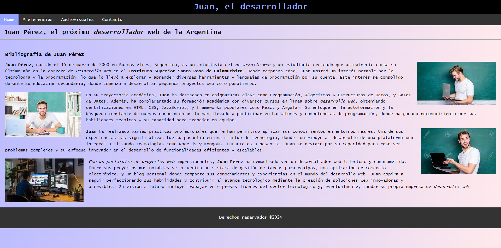

Mi primer proyecto en el mundo del desarrollo web fue una página creada en HTML. En este proyecto, me enfoqué en mostrar los fundamentos principales del lenguaje HTML, incluyendo la estructura básica de una página web, el uso de etiquetas para definir encabezados, párrafos, listas y enlaces, así como la incorporación de imágenes y tablas. Este proyecto me permitió comprender cómo HTML sirve como el esqueleto de cualquier sitio web, proporcionando la estructura necesaria para que el contenido sea presentado de manera organizada y accesible.
